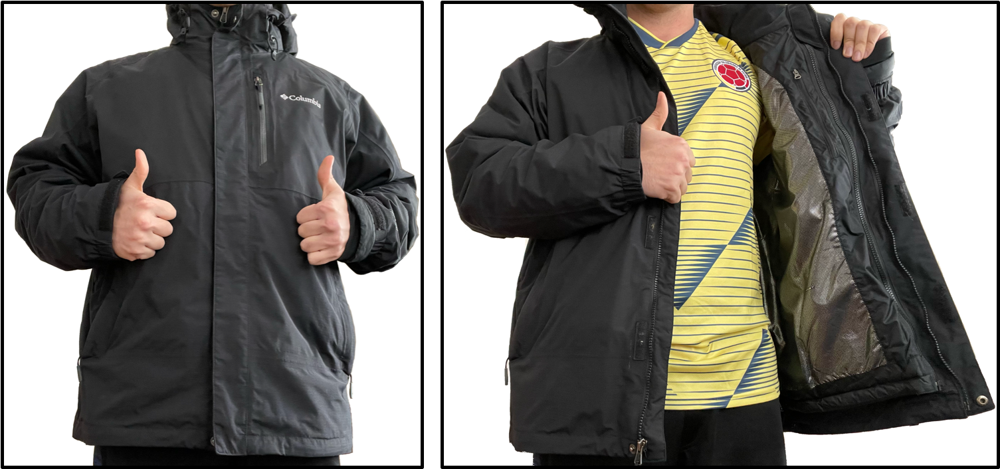
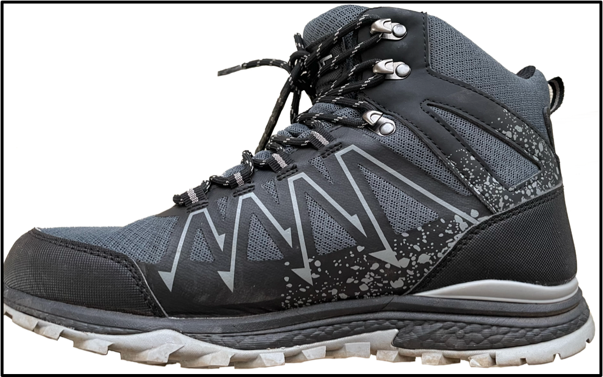
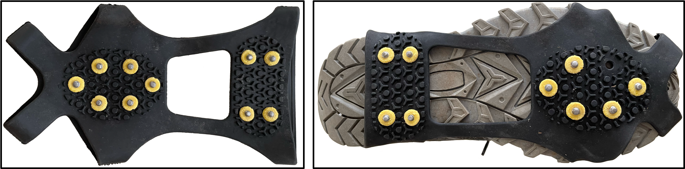

Embrace the winter as someone from the tropics
I come from Medellin, Colombia, a well-known city for flowers, coffee, and fantastic weather. The average temperature in Medellin is between 17°C to 28°C. Furthermore, there are two seasons in Colombia: dry and rainy. During the dry season, you may experience a shiny and clear sky daily. However, when it is the rainy season, you may expect a swimming pool the size of a city and blocks of ice falling from the sky. The tropical weather is terrific, don’t you think so? Notice that I have not mentioned snow anywhere yet. Indeed, I tasted snow for the first time when I visited El Nevado del Ruiz in Caldas, Colombia, at 10 years old. And I experienced a complete season below 0°C during my internship in Germany in 2015. In this post, I want to talk about the daily life of a tropical-country guy during the winter season.
Keywords — winter, weather, health, immigration, expats.
From the eternal spring city to the Canadian winter
The first winter is always interesting to experience; it is as white as in the Christmas movies. But for someone who needs to learn about winter clothes or to live with snow, there were several problems on the table. For example, my shoes were not waterproof nor large enough to avoid snow getting into my feet. However, I survived and enjoyed the German winter experience. The real challenge began in Canada. Oh, Canada! I love it, but the Canadian winter is harsh.
My first experience with the Canadian winter was on January 1st, 2018. The moment I arrived at Toronto airport, the breeze touched my nose, and damn! It was cold. During the first winter, I was too naive about how to behave in temperatures below zero degrees. For example, the first time I saw Ontario lake frozen, my first thought was to walk over it. The experience was creepy but worth it, as the ice layer was too thick. The problem arose because I did not wear gloves at that moment, and my hands got wet from touching ice and snow. Notice that water in the skin may help to freeze it faster. Within a few minutes, I lost the whole sensation in my hands, then I could not move them, and finally, they started to change colours. I was lucky that my friends borrowed me some gloves, and we found a place to stay warm. But I could easily lose my hands or at least some fingers in that situation. Due to this experience and other bad decisions during winter, I write this pocket guide for people who have yet to experience winter.
Clothes and the layers theory
My outfit during the first days in Canada was an autumn jacket, t-shirt, jeans, and converse-type shoes in place with -17°C and snow until the knee. At least I had a hat, scarf, and gloves; otherwise, the situation would be worse. I am sure that the readers who live in countries with winter are in pain or facepalm mode right now. Indeed, when my master’s supervisor saw me wearing those clothes, he took me to the nearest shopping center to buy winter shoes and a jacket. But for someone whose hometown does not reach temperatures below 10°C, this requires an explanation.
- Winter jackets differ from those we see on the streets in Medellin. They have thermal insulation with low heat-conductivity materials like plumage or synthetic polyester; in practical terms, they are fluffier than a jacket for autumn weather.

Also, for your upper part, wear a winter hat and a scarf to cover your mouth, ears, and nose. Ear muffs are another option if you are not a fan of hats. And remember to wear comfortable gloves.
The winter shoes must be waterproof because snow is typically frozen water. Once the snow touches your skin, it melts, and your socks are wet; in the worst-case scenario, you get frostbite on your feet. If possible, the shoes should be at the height of your ankle or more. You want to avoid snow inside your shoes. Also, you may wear thick and large socks to keep your feet warm.

To overcome the ice on the streets, you must wear spikes with the shoes. More information is in the next section.
Although winter pants are a thing, your legs will feel cold if you stay outside for an extended time. They are recommended if you are hiking or doing winter sports. But for daily life, a jean with long underwear is far enough.
Depending on the weather, you may want to protect your body with different layers of clothes, e.g., a t-shirt, sweater, and winter jacket. For example, on a typical day in the south of Norway at -7°C, I wear a t-shirt with a winter jacket. But I would add the sweater layer in places like Kingston or Montreal, where the temperature reaches -25°C.
The shoes and jacket are the most expensive items on this list. There are two options, buy them in second-hand stores, or wait until sales season, typically in spring. For further information about this topic, visit my friend’s blog, livingcheapinnorway.wordpress.com/…. She provides more tips and tricks about clothing for cold places and living in Norway.
The infamous freezing rain
No one talks about freezing rain; this is the most kept secret from the winter. What happens when there is snow in a place a little bit above 0°C? It melts. And what happens if the temperature is below 0°C again? The water freezes, but not in the shape of snow, it freezes as ice. Now, imagine yourself walking on ice from your house to the university. Let me give you the following video as an example:
<iframe width="560" height="315" src="https://www.youtube.com/embed/KwbFWq2YLb4"
title="YouTube video player" frameborder="0"
allow="accelerometer; autoplay; clipboard-write; encrypted-media; gyroscope; picture-in-picture" allowfullscreen></iframe>
<figcaption><center>Example of a walking pattern in a freezing rain day</center></figcaption>It is not surprising that the emergency rooms are full after freezing rain. Indeed, hip fractures in older adults are common injuries in this scenario. But do not worry, the societies from cold weather have solved this problem with spikes for shoes and salt in the streets. You may buy those shoe spikes in the supermarkets from around November, and they can be attached to a variety of shoes. It is uncomfortable to walk under those conditions, but at least we are safe. Likewise, some places do not allow people to walk with spikes inside, as they may damage the floor. Below, you may find an image of the spikes and shoes with them.

Now, the next question arises. What about driving or biking when the streets are covered with ice? Do not worry again; there are winter tires for cars and bikes. But driving on ice is horrifying as it is easy to lose control of the vehicle. Nevertheless, cars have safety systems for winter environments, like the anti-lock braking system and electronic stability control. Always check that those systems are turned on before driving. Likewise, drive with a lot of caution, keep your distance from other cars, and, if possible, take driving lessons for winter conditions.
Conditions inside the house
There are a few things to say here; heating a house is expensive, but we need to do it for health reasons. Depending on your place, there are several ways to heat a home. You may find a gas system, an electric heating floor, or wood in a fireplace. Sometimes you have control of the heating system; other times, there is a central heating station for the whole building. Keep a fire alarm turned on in your place, just in case. And during the winter, try to keep the heating system on because keeping a home warm is expensive, but taking the temperature from minus zero degrees to a comfortable value is more costly. Wear warm and comfortable clothes inside the house and minimize the temperature in the heating to reduce the electricity or gas bill.
The most challenging part inside the house is dealing with the humidity. You will notice that the skin and lips are drier, the nose bleeds more than usual, and the eyes tear frequently. This phenomenon is due to the low humidity in your place; remember, the water in the environment is frozen. On the one hand, apply face and hand cream to hydrate your skin, and apply vaseline to your lips to take care of them. On the other hand, you can get a humidifier to make water steam; this helps with problems in the eyes and nose. If you notice those reactions to the winter environment persist, visit the hospital.
One of the first cultural shocks that someone from tropical countries faces in places with winter is about people taking out their shoes before entering the house. This habit is due to cleanliness. Because your shoes get dirty from melted snow, salt, and other street dirtiness. Also, the shoe spikes can damage the floor. Perhaps the closest scenario I can give you about how messy the situation is, imagine yourself walking in the rain for three months straight. So, unless you want to mop the house daily, it is better to take out your shoes before entering.
The winter depression and lack of vitamin D
Have you ever listened to “The lazy song” by Bruno Mars?
Today, I don’t feel like doing anything.
I just wanna lay in my bed
Don’t feel like picking up my phone
So leave a message at the tone
’Cause today, I swear I’m not doing anything
This feeling is more common during winter due to the cold environment and the lack of sunlight. Indeed, The days are shorter and the nights longer. The first time I experienced sunrise at 8:00 and sunset at 17:00, my head exploded. In Medellin, the sunrise is around 6:00, and sunset is around 18:00, almost every day of the year. Due to this imbalance in your daily sun exposure, you will likely feel tired, sleeping longer than usual, and maybe grumpy. This situation is known as winter depression. And the best that you can do to overcome it is to take vitamin D supplements in the morning, keep a healthy diet, do physical activities, and get some fresh air out of your house. If you notice that the winter depression is getting challenging to deal with, worth to visit the hospital.
Some final thoughts
Let me finish this post with a simple statement, I hate skiing. It is one of the scariest activities I have ever tried in my life, and says the guy who has jumped from bridges and flown in paragliding. Sorry to my fellow Norwegians about such a statement because the ski is the national sport in the country. But still, every winter, I try to experience something different, from building a snowman to fighting with snowballs. Although staying at home the whole season is tempting, there is a lot of fun and places to discover.
A close friend once told me, “Never eat yellow snow,” and I keep those wise words in my heart. In addition, never lick a piece of metal during winter, I did it with a transit sign for the meme, and it was painful. Winter has been a whole new world for me, and indeed, it is my favourite season because there are so many activities I want to experience. Part of my philosophy is to enjoy little details in life, and touching snow or the sensation of coming home after a cold day bring me happiness. I hope that you will enjoy winter as much as I do.
*Disclaimer: This post represents my personal opinion. I am not responsible for any content on external sites. And this is not health advice.